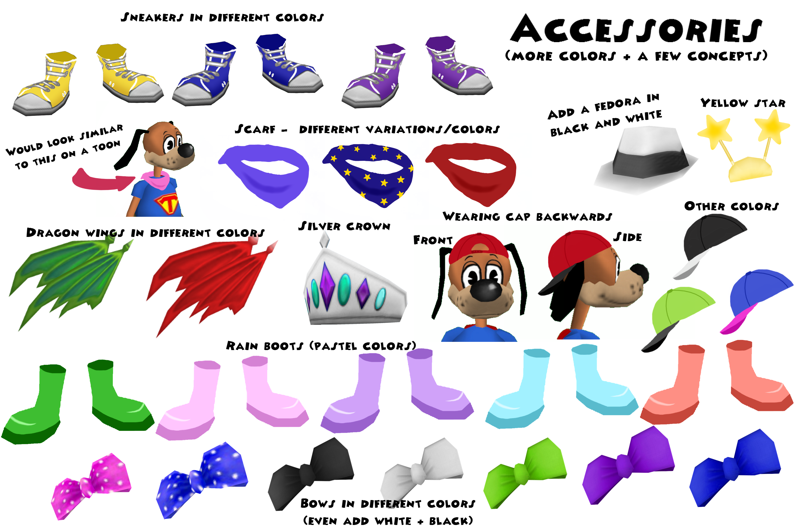

Art
Hold markøren over billederne og du vil kunne se dem i større størrelse


Koncepter
Kort om spillet Toontown Rewritten: Spillet er et multiplayer online spil for børn, unge og voksne. I spillet spiller du som en karakter du selv har lavet, hvorefter du så kan udforske forskellige ”playgrounds”. Der er omkring 2 millioner registeret brugere, og spillet har taget udgangspunkt i det gamle ”Toontown Online” spil fra Disney som lukkede i 2013. Jeg har lagt koncepterne op på ”Toontown Rewrittens” Reddit for at høre folks mening. Her fik jeg b.la svar fra nogle af deres moderatorer og endda grundlæggere af spillet. Hvis du ønsker at læse mere omkring opslagene, kan du klikke på deres tilhørende link under billedeteksten.
Koncept: Få en funktion som kan give spillere lov til at gemme deres yndlings outfits. Link til opslag
Koncept: Tilføje en knap på ens profil og andres, så man kan få bedste venner i spillet. Link til opslag
Koncept: Lave en funktion som kan gøre spillet mere funktionelt og belønnende når man har maksimeret "gardening" i spillet. Link til opslag
Koncept: Tilføje en timer på hvornår man får et nyt katalog, og gøre det mere brugervenligt at sende/købe gaver til venner i spillet. Her fik jeg endda feedback fra en af grundlæggerne af spillet:
Link til opslag Koncept: Tilføje mere og varieret tilbehør, b.la flere farver af sko, sløjfer, vinger osv. Her fik jeg svar fra en moderator, som synes det var interessante koncepter:
Link til opslag
Koncept: Tilføje en knap så man kan foreslå ord som ikke allerede eksisterer i spillet, som man ønsker at kunne bruge i chat. Link til opslag

Koncept: Tilføje en ny side på spillets hjemmeside, hvor man kan se de spillere som har gennemført spillet. Det kan derfor virke mere belønnende at gennemføre spillet, og derudover får man også en sjælden bluse til sin karakter. Til dette opslag fik jeg feedback fra en af grundlæggeren:
Link til opslagKoncept: Nye kostumer til Halloween. Her vises samurai, Cleopatra, påfugl, "toon enough" og rockstjerne. Link til opslag
Koncept: Gøre det muligt at designe sit eget kæledyr. Link til opslag